Lealtad › Tarjetas · recorrido
Tarjetas lisas, tarjeta digital con QR y sellos
Lo que pediste: las tarjetas deben ser colores sólidos sin recortes ni bordes y también la interfaz mejorada; después de eso, fase 2 (tarjeta digital con QR)
; luego, tarjeta digital por WhatsApp, sellos como Loyallyst
con el sello mediante un icono
. Aquí está cada pantalla como quedó, junto a como estaba.
card.token, aplicada solo en local01Galería de tipos: la tarjeta, sola y lisa
- Sin recortes: se fueron las muescas de cupón de los lados y la marca de agua (% o estrella).
- Sin bordes: la tarjeta ya no va dentro de una caja; las cifras de arriba quedan solo con su color de fondo.
- La cara del tipo: el nombre arriba y lo que da en grande. Ya no sale el número falso «0000-0000» ni «Al portador», que no eran de ningún plástico.
- Un clic en la tarjeta abre sus tarjetas (antes solo el botón «Ver tarjetas»).
- Botones en un renglón: «Ver tarjetas» y «Nueva tarjeta» con texto; Editar y Desactivar solo con su ícono (al pasar el ratón dicen su nombre).
- La marca de la tarjeta es la empresa («Reginas»), no la sucursal: la tarjeta vale en todas.
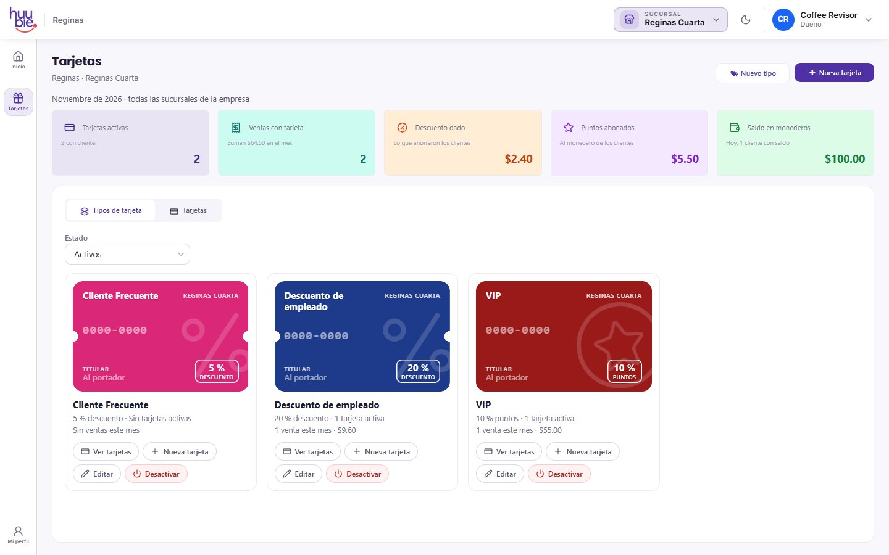
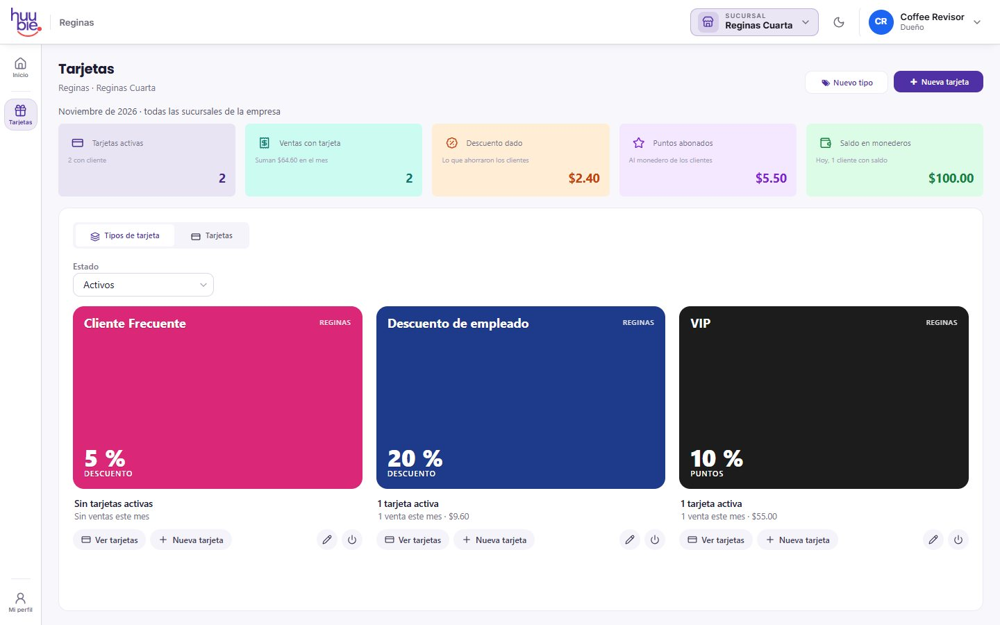
02Alta de tarjeta: el plástico se dibuja mientras escribes
- El dibujo de la izquierda es la cara del plástico: número, titular y beneficio, del color de su tipo.
- El beneficio ya no va en un sello con borde: es letra sobre el color.
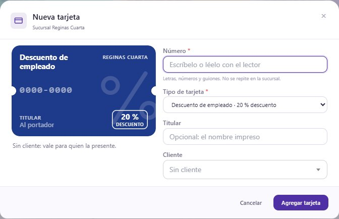
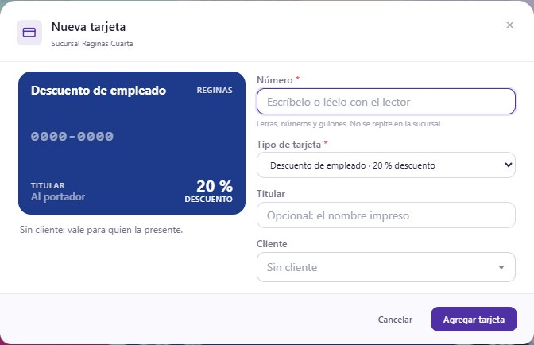
03Alta de tipo: la cara del tipo, en vivo
- Aquí se usa la cara del tipo (la misma de la galería): al escribir «Oro», 15 % y elegir el dorado, la tarjeta cambia al momento.
- Sin porcentaje todavía, se ve «0 % descuento» apagado, para que se entienda dónde va.
- Esta captura es solo de muestra: se canceló, no se guardó nada.
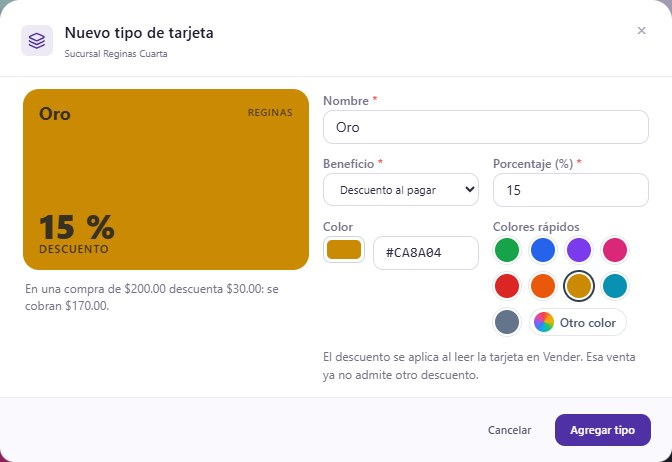
04Lista de tarjetas: un botón nuevo en la fila
- El botón QR (segundo de la fila) abre la tarjeta digital de esa tarjeta (paso 06).
- El color del tipo ya no es un punto redondo con aro: es una tarjetita lisa de su color.
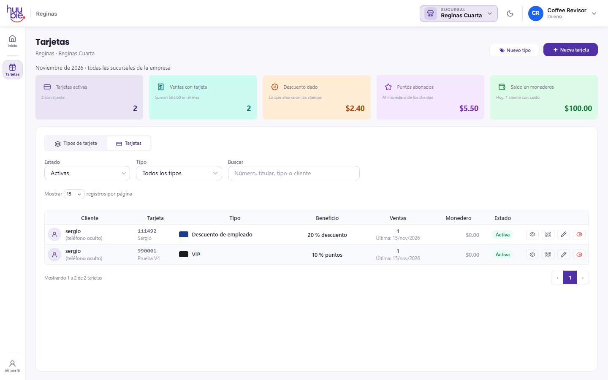
05Ficha de la tarjeta
- El plástico liso, igual que en el alta.
- Botón «Tarjeta digital» debajo del cliente: cierra la ficha y abre la ventana del paso 06.
- Las cajas de cifras sin borde, solo con fondo; si quedan en número impar, la última ocupa el renglón completo (antes quedaba sola a la mitad).
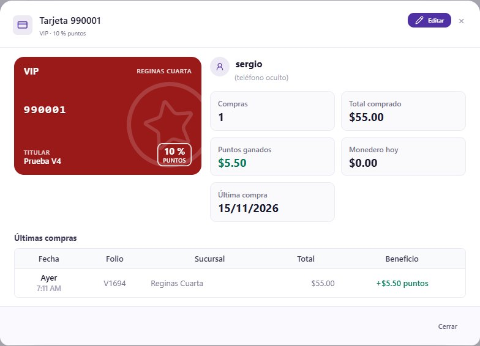
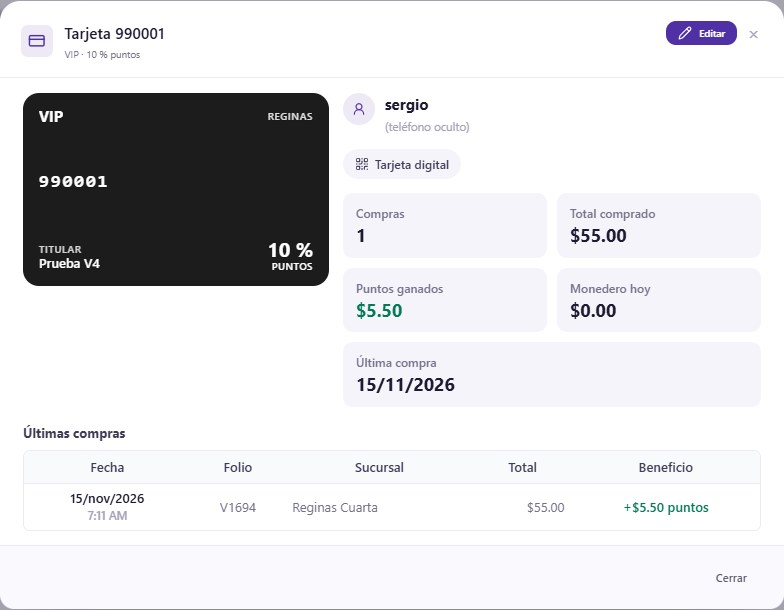
06Ventana «Tarjeta digital»
Es la que usa el personal para darle la tarjeta al cliente. Hay tres formas:
- En el mostrador: el cliente escanea este QR con la cámara de su teléfono y se le abre su tarjeta. Este QR lleva el enlace.
- Por WhatsApp: «Abrir WhatsApp» manda el mensaje ya escrito al teléfono del cliente dueño (se puede cambiar).
- Copiar enlace, para pegarlo donde sea.
- «Nuevo enlace» cambia la clave del enlace y el anterior deja de abrir (por si se mandó a otra persona).
- El enlace se crea la primera vez que alguien abre esta ventana. Crearlo pide permiso de editar; después, verlo solo pide permiso de ver.
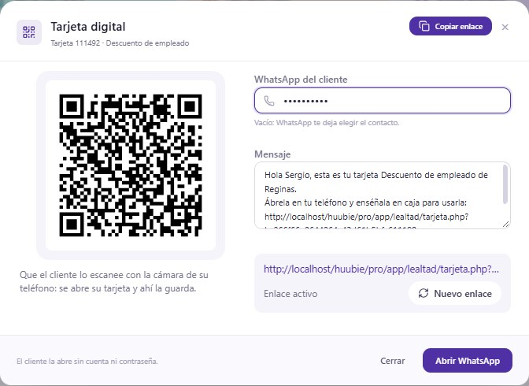
07Lo que ve el cliente en su teléfono
Una página propia (app/lealtad/tarjeta.php) que abre sin cuenta ni contraseña. Se ve clara u oscura según el teléfono.
- Su tarjeta, del color del tipo, y debajo un QR con el número de la tarjeta: es lo que enseña en caja.
- Lo que le da la tarjeta, cuántas compras lleva y cuánto se ha ahorrado; en una tarjeta de puntos con cliente, su monedero de hoy.
- Sus últimas 5 compras.
- Del cliente solo sale el primer nombre. No la encuentran los buscadores, y la vista previa de WhatsApp solo muestra el nombre de la tienda.
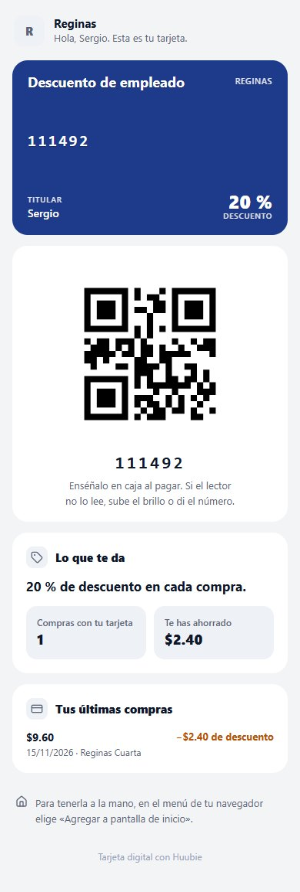
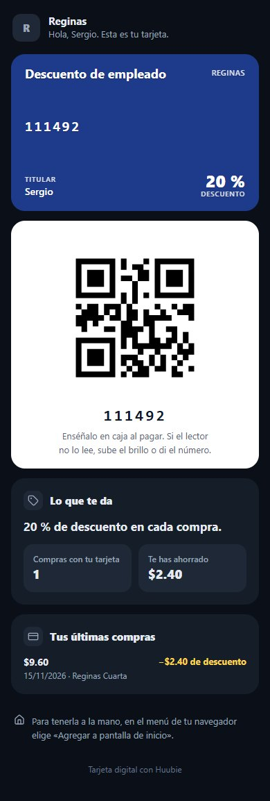
08En caja: «Vender» la lee como el plástico
- El lector escribe lo que trae el QR y manda Enter, igual que con el código del plástico. El QR del teléfono trae el número
111492. - En la prueba se leyó el QR, se escribió ese número en «Tarjeta de lealtad» y «Vender» aplicó la tarjeta: 20 % de descuento y el cliente dueño en el ticket.
- No se vendió nada: el ticket estaba vacío y luego se quitó la tarjeta.
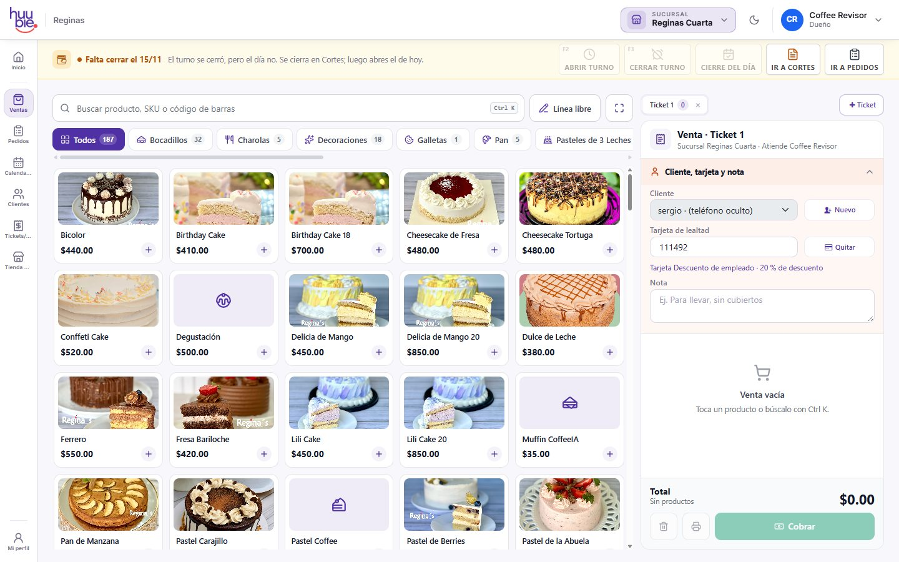
Ojo con el lector: los lectores láser baratos (de una dimensión) no leen QR en una pantalla. Con un lector de imagen (2D) sí. Si no lo lee, el cliente dicta el número, que también está escrito bajo el QR.
09Enlace que ya no abre
- Si el enlace se cambió, si la tarjeta o su tipo están desactivados, o si la clave es falsa, sale esta misma página. No dice cuál de los casos fue, para no dar pistas.
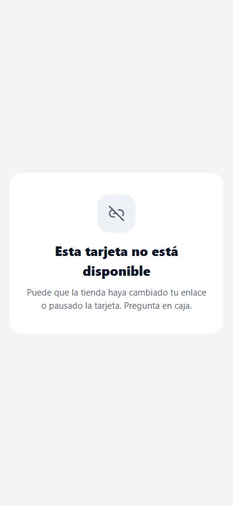
10Galería en el teléfono
- Una tarjeta por renglón, a todo el ancho.
- Si no cabe, «Nueva tarjeta» se queda solo con su ícono para que los botones no se doblen.
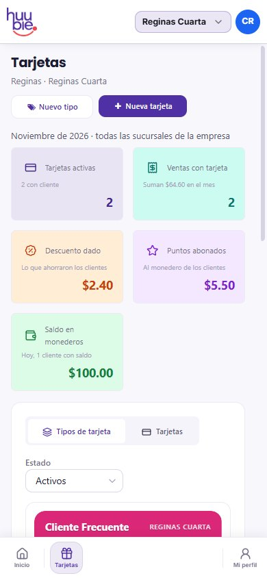
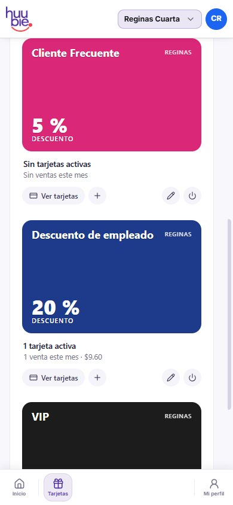
11La tarjeta digital, por el WhatsApp de la tienda
- Al dar de alta una tarjeta con cliente, el interruptor «Mandarle su tarjeta digital por WhatsApp» le manda su enlace solo. Se prende si el cliente tiene WhatsApp de 10 dígitos y dice a qué número sale.
- En la ventana «Tarjeta digital», el botón «Mandar desde el WhatsApp de la tienda». El botón de abajo, ahora «Abrir mi WhatsApp», lo manda desde el teléfono de quien atiende.
- Sale por el número de la empresa, igual que los recordatorios de saldo. Queda en la conversación de Ventas › WhatsApp y no le llega a quien escribió BAJA.
- En local es simulado: sin el token de Meta no sale nada a la red. Antes de prod hay que aprobar la plantilla en Meta.
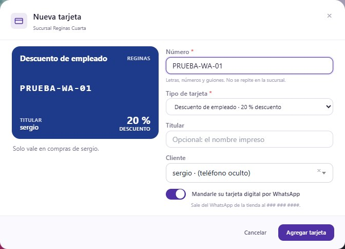
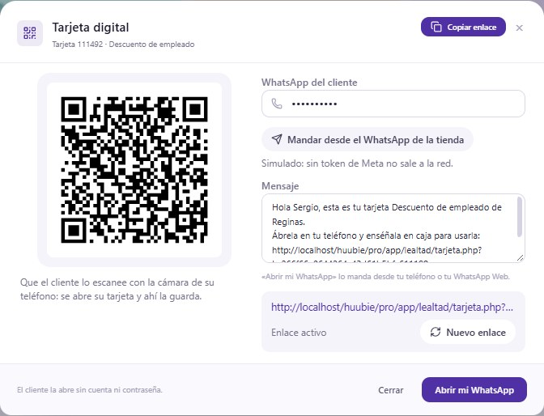
12Sellos: el tipo y su ícono
- En «Nuevo tipo», el beneficio «Sellos: junta y llévate un premio» pide: pesos por sello, cuántos sellos para el premio, el premio y lo más que descuenta.
- El ícono del sello se elige con el selector de íconos de CoffeeSoft: al buscar «cafe» sale la taza. Sin ícono, el sello es un círculo liso.
- La tarjeta de ejemplo enseña 3 sellos llenos para que se vea la diferencia entre juntado y faltante.

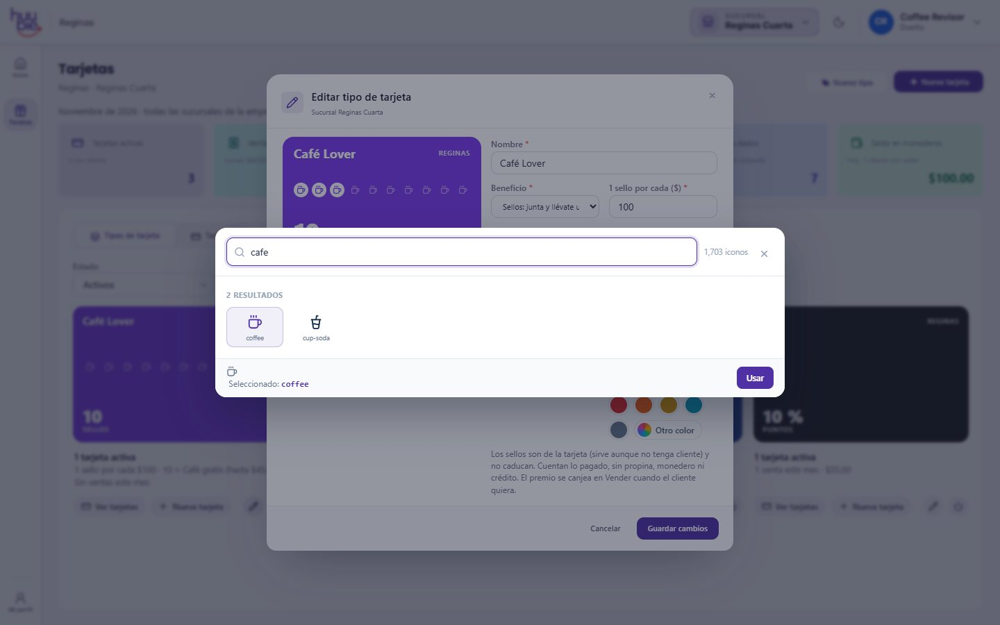
13Sellos en la galería y en la lista
- La tarjeta del tipo enseña sus 10 sellos y «10 SELLOS»; debajo, qué se gana y cuánto vale el premio.
- En la lista, la columna Beneficio dice cuántos lleva cada tarjeta («7 de 10 sellos», o «12 juntados · premio listo» si no ha canjeado).

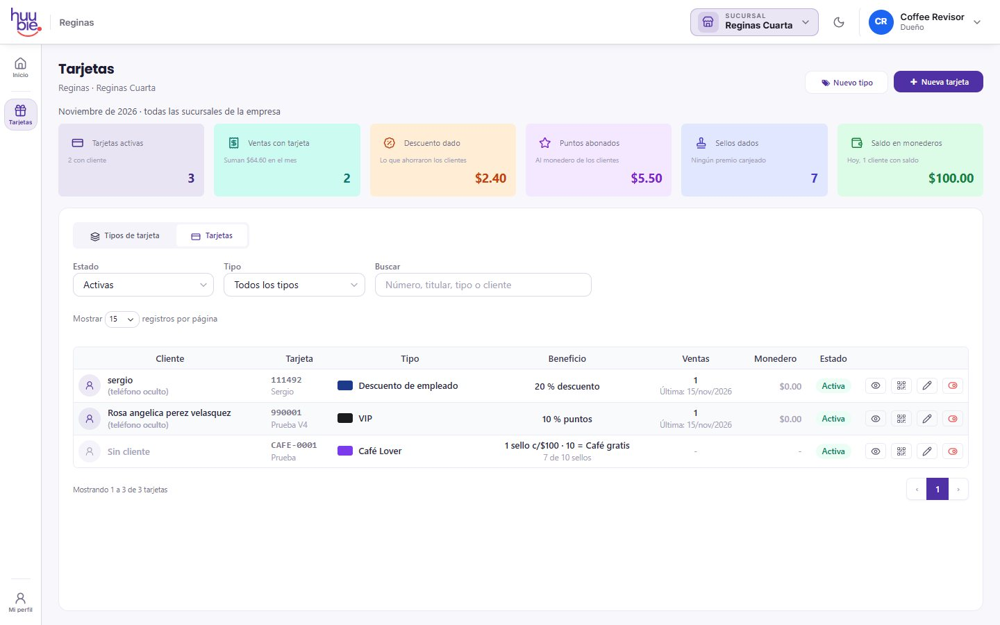
14La ficha de una tarjeta de sellos
- La tarjeta enseña sus sellos con el ícono y el avance «7/10».
- Cajas nuevas: «Sellos hoy» y «Premios canjeados» (cuántos y cuánto descontaron). Cada compra dice «+2 sellos» o «Premio −$45.00».
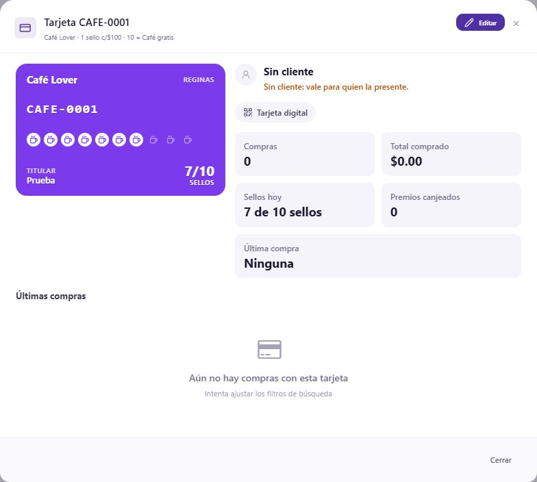
15Lo que ve el cliente: le faltan 3, o su premio está listo
- En su tarjeta digital, los sellos van en grande, del color de su tarjeta.
- Le dice cuántos le faltan y qué cuenta (efectivo, tarjeta o transferencia; no el monedero ni el crédito). Con la meta cumplida: «¡Tu premio está listo! Pídelo en caja».

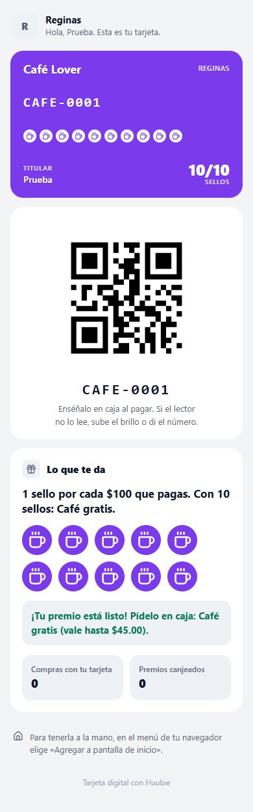
16En caja: «Vender» lee los sellos y canjea el premio
- Al leer la tarjeta: «12 sellos juntados · premio listo: Café gratis (se canjea al cobrar)».
- En el cobro aparece «Canjear premio: Café gratis (hasta $45.00)». Al pulsarlo, la venta de $440.00 queda en $395.00 y se esconde el descuento manual: el premio es el descuento de esa venta.
- Al cobrar se suman los sellos de lo pagado (1 por cada $100). Si dos cajas intentan canjear el mismo premio, solo una lo logra.
- Cancelar la venta en Historial quita los sellos que dio y regresa el premio.
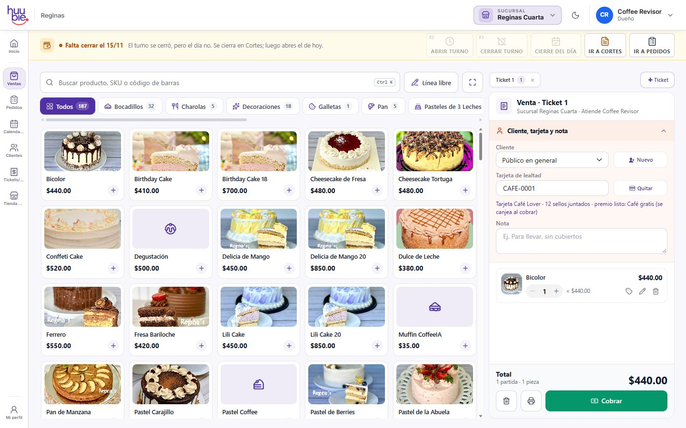
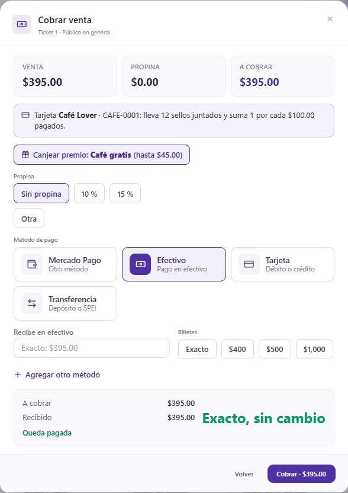
Estas capturas se tomaron con el turno simulado en el navegador. Después se probó el cobro real, con un turno de prueba en la sucursal 4: V1705 sumó 4 sellos y V1706 canjeó el premio ($410.00 → $365.00) y sumó 3. Las dos ventas se cancelaron (los sellos se deshicieron) y el turno cerró cuadrado en $0.00.
17Premio listo, avisado por WhatsApp
- Cuando una venta completa la meta y la tarjeta tiene cliente con WhatsApp, le llega:
«Hola Sergio, ya juntaste tus 10 sellos en Reginas. Tu premio Café gratis te espera: pídelo en caja cuando quieras. Tu tarjeta: (enlace). Para no recibir mensajes de la tienda, responde BAJA.»
- Sale una vez por premio. Si canjea y en la misma compra completa otro, también avisa.
- En pantalla, al cobrar, se ve «Completó un premio: le avisamos por WhatsApp».
- Si los archivos de WhatsApp no están en el servidor, «Vender» cobra igual y no avisa.
18Qué comprobé y qué no
| Prueba | Resultado | Cómo |
|---|---|---|
| Sin muescas, sin borde y sin sombra en el plástico | Sí | Estilos medidos en el navegador: máscara none, borde 0, sombra none |
| Botones de la galería en un renglón | Sí | Medido a 1366, 390 y 360 px de ancho |
| QR de la ventana | Da el enlace | Leído con un lector de QR cargado solo en la prueba |
| QR del teléfono | Da 111492 | Igual |
| «Vender» acepta ese número | Sí | Paso 08 |
| Clave falsa o con basura | 404 | Paso 09 |
| «Nuevo enlace» | Sí | El viejo da 404, el nuevo abre y el mensaje se actualiza |
| Errores en la consola | 0 | En Tarjetas y en la página del cliente |
| Sintaxis | Sin errores | php -l y node --check de cada archivo tocado |
| Tarjeta por WhatsApp (alta y botón de la tienda) | Simulado | Con un número de empresa temporal, borrado después; los mensajes quedaron en la conversación |
| Sellos: ganar, canjear, premio + descuento, canjear dos veces, premio mayor que la compra | Sí | Controladores reales dentro de una transacción que se deshace (44 pruebas en total) |
| Cancelar en Historial: quita sellos y regresa el premio | Sí | Igual |
| Aviso «premio listo»: una vez por premio | Sí | Igual, en simulado |
| Resumen del mes y reimpresión del ticket | Sí | Igual |
| Pantallas de sellos (selector, galería, lista, ficha, teléfono, cobro) | Sí | Pasos 12 a 16, con datos de prueba borrados al final |
| Cobro real con premio desde la pantalla | Sí | 17/11/2026, sucursal 4, turno de prueba 1003: V1705 ($440.00, +4 sellos) y V1706 (premio −$45.00, cobró $365.00, +3 sellos, ticket «4 juntados · PREMIO LISTO»). Las dos se cancelaron y el turno cerró cuadrado en $0.00 |
| Envío real por Meta | No lo probé | Faltan las plantillas aprobadas |
| Lector físico en caja | No lo probé | — |
| Otros roles (solo el Dueño tiene Tarjetas) | No lo probé | — |
→Para subirlo a prod, en este orden
- Correr las migraciones antes del código:
2026-11-15_lealtad-modulo-propio.sql,2026-11-17_tarjeta-digital.sql(card.token) y2026-11-17_sellos.sql(columnas de sellos y tablacard_stamp). - Subir el código de WhatsApp (Tarjetas lo necesita para cargar) y aprobar en Meta
huubie_tarjeta_digitalyhuubie_premio_listo. - Subir juntos Lealtad (
app/lealtad/), Vender e Historial (ctrl-ventas.php,ctrl-historial.php,ventas.js,pedido-detalle.js),mdl-lealtad.php,mdl-lealtad-whatsapp.php,order.cssyassets/plugins/qrcode/qrcode.js. Si sube Vender sin Historial, una venta con sellos se cancelaría sin quitarlos. - Probar en caja con un lector que lea QR (2D) y un cobro con premio.
Capturas tomadas el 17/11/2026 en local, sucursal Reginas Cuarta, en modo claro. Los teléfonos de los clientes están tapados. En la prueba solo se escribió en la base local: la tarjeta 111492 quedó con su enlace. Las altas que se ven se cancelaron, y el tipo «Café Lover» con su tarjeta CAFE-0001 fueron datos de prueba, borrados al terminar.